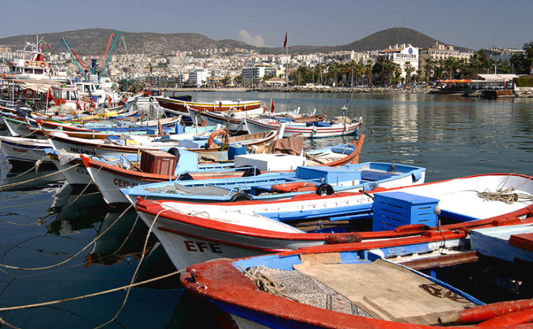
.
After the bustle of Istanbul it was good to get to the sea and relax. We stayed at the delightful Hotel Kismet, founded by the late Princess Hümeyra Özbas and her delicate (and delightfully old-fashioned) touches could be seen throughout the hotel. We chose it because it was specifically not child-friendly ....
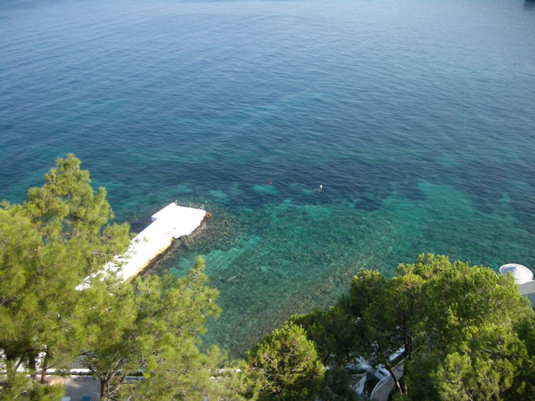
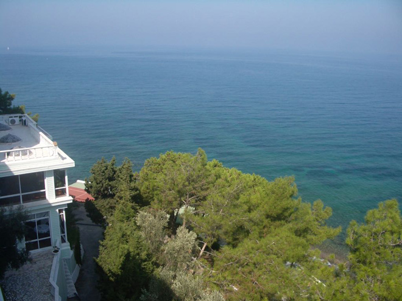
The Hotel Kismet has been frequented by many celebrities and members of royalty including (as per photos below) Queen Elizabeth II of England, President Jimmy Carter, King Carl Gustav XVI of Sweden, President Lech Walesa of Poland, President Vaclav Klaus of the Czech Republic and Prince Felipe of Spain plus the King of Greece, the Queen of the Netherlands, President Johnson, the Shah of Iran and the Habsburgs of the Austrian Imperial Family.
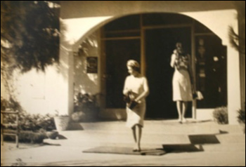
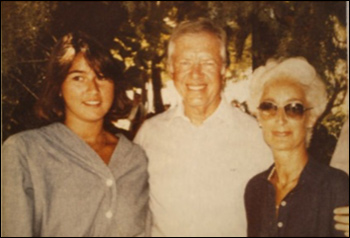
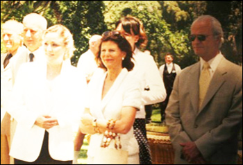
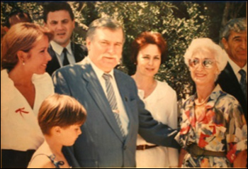
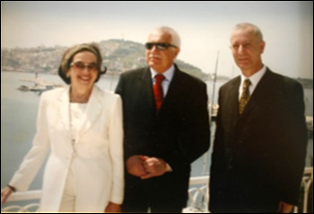
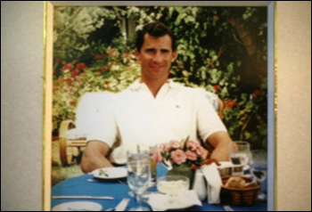
The location was certainly fantastic and, although there was a pool available, it was much nicer to swim in the sea and sunbathe on the terrace just above.
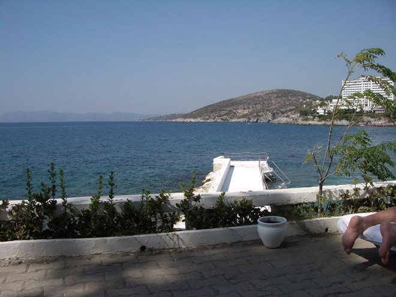
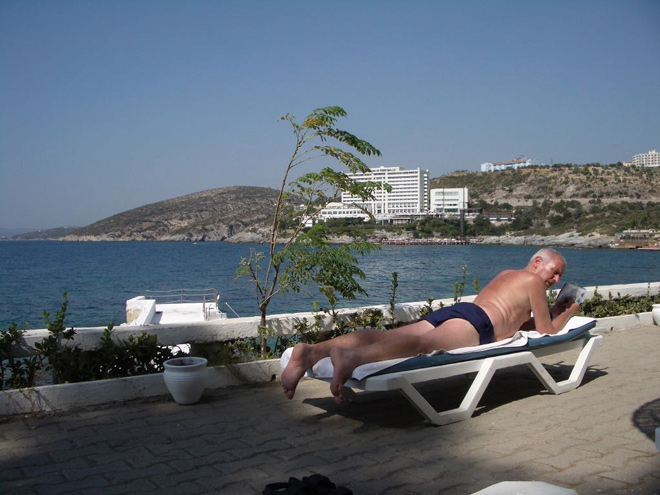
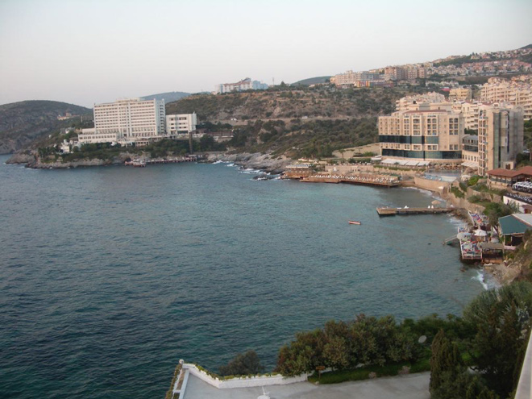
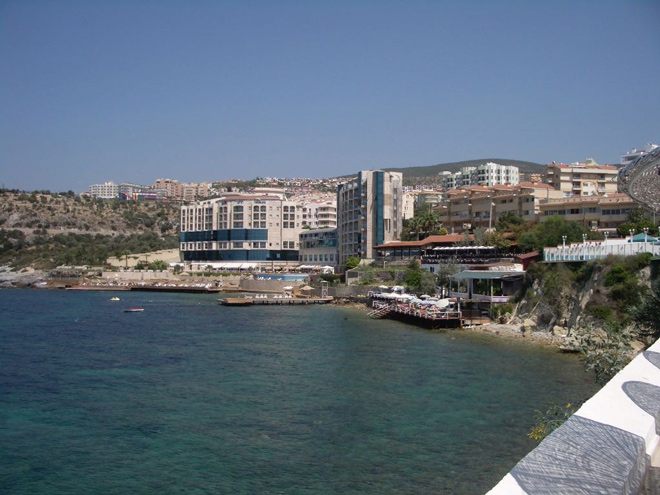
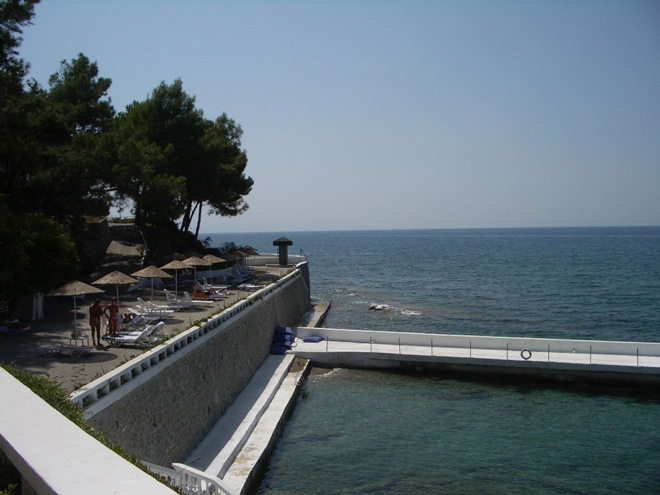
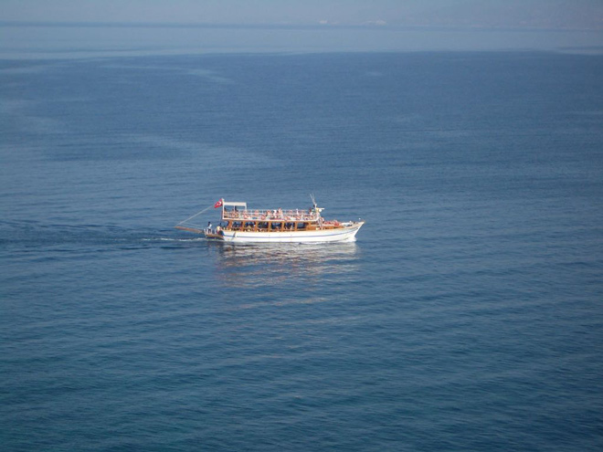
All rooms had a sea view from which it was possible to enjoy the stunning sunsets.
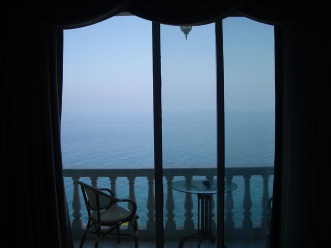
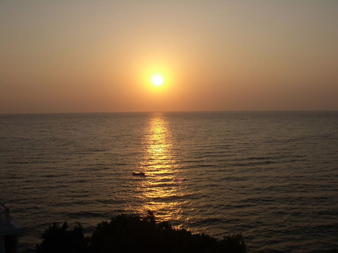
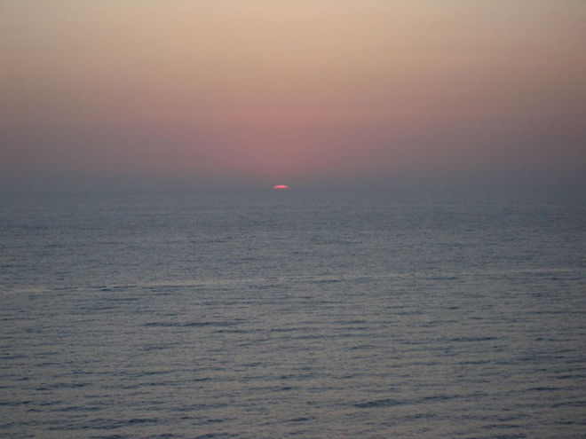
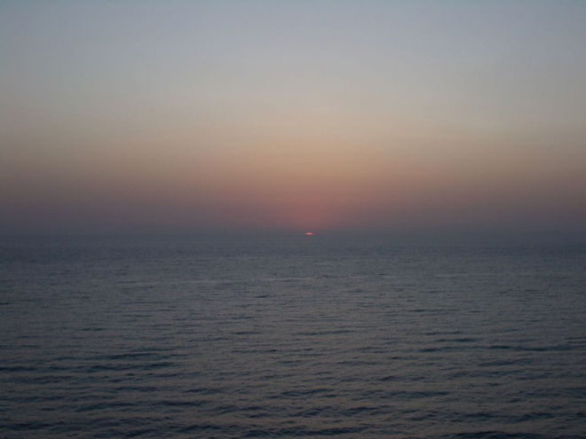
Kusadasi's name, meaning 'bird island' is taken from a small isle, known as Pigeon Island, which is tacked onto the mainland by a causeway. The Statue of Peace on the promenade clearly continues the bird theme.
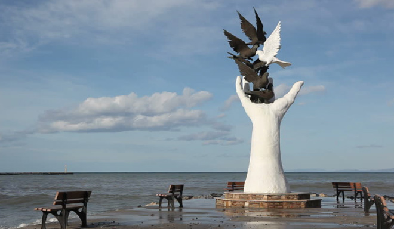
Kusadasi is now a stop-off point for many Mediterranean cruise ships - so there is plenty to buy in the local markets - but expect to haggle to get a decent price! At heart though, it remains a simple fishing village - we ate fabulously cooked fish at the seafront restaurants.
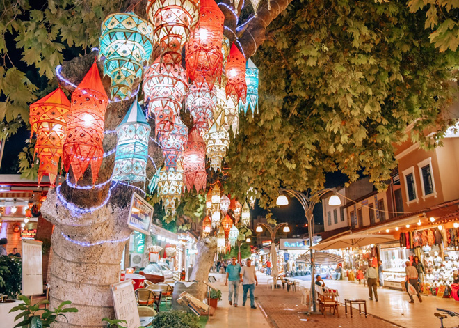
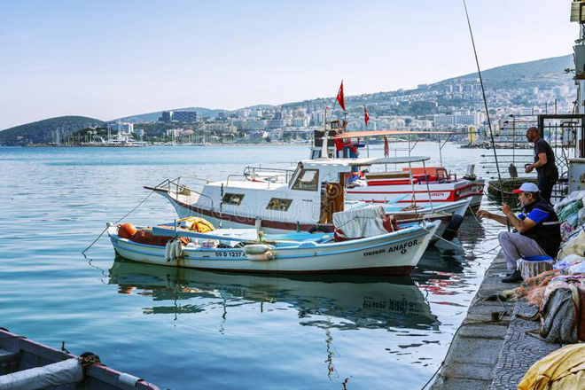